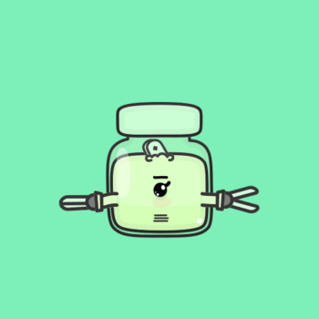
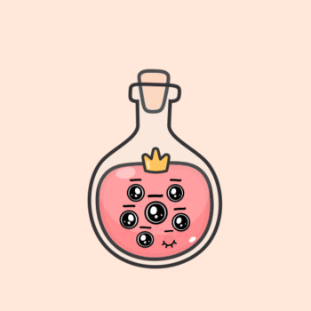
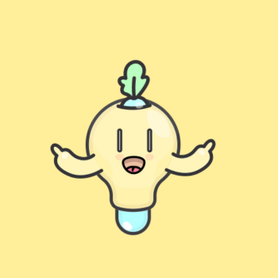
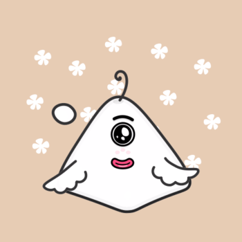
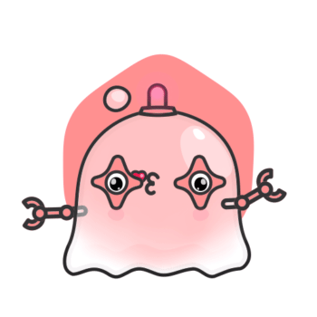
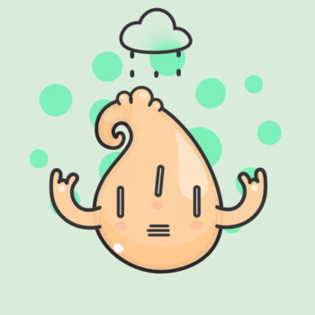
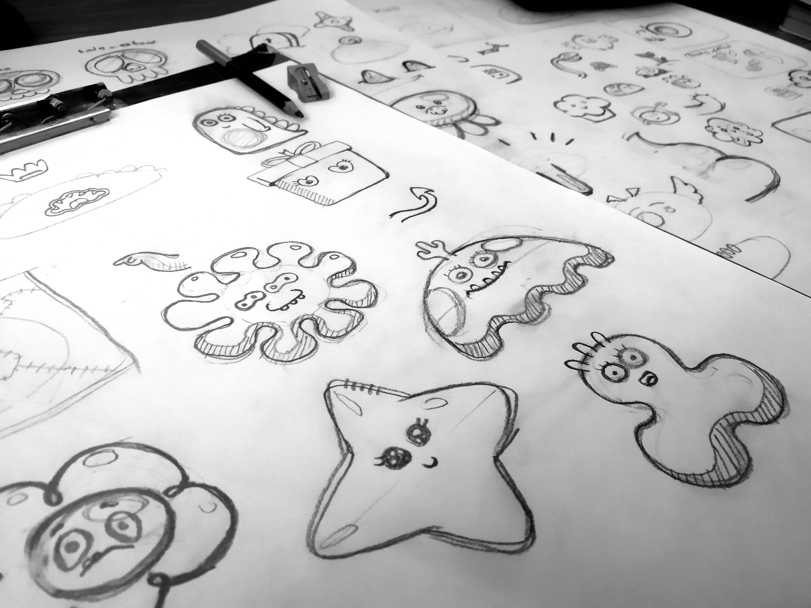

This project represents a journey through near-infinite possibilities. While our generative engine possessed the capacity to spawn over 100 billion unique, animated variants, I chose to curate only the absolute finest. From that massive digital ocean, I hand-selected 12,000 distinct ‘Jelly Sprites’—each a masterpiece of loop-based animation, resulting in a collection of unparalleled aesthetic beauty.

Sprite #001
Sprite #002
Sprite #003
Sprite #004
Sprite #005
Sprite #006